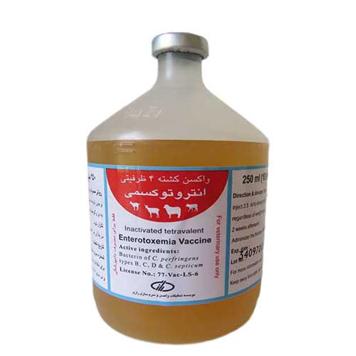

واکسن کشته چهار ظرفیتی انتروتوکسمی
📝نوع و شکل واکسن:
واکسن کشته، به صورت سوسپانسیون
📝ترکیبات واکسن:
باکترین کلستریدیوم پرفرینجنز تیپ های D,C,B و کلستریدیوم سپتیکوم
فرمالدیید به عنوان غیر فعال کننده
📝مورد مصرف:
این واکسن به منظور ایجاد ایمنی فعال علیه بیماری اسهال عفونی بره ها، انتروتوکسمی، پرخوری یا قلوه نرمی و براکسی در گوسفند، بز، بره و بزغاله تهیه شده است.
📝روش مصرف، دز و راه تجویز:
بطری واکسن را به خوبی تکان داده و دو و نیم میلی لیتر واکسن را بدون توجه به وزن و سن دام، از راه زیر جلدی تزریق نمایید.
📝برنامه و زمان مناسب واکسیناسیون:
برای انتقال ایمنی مادری به زاده ها، توصیه میگردد میش های آبستن 3 تا 4 هفته پیش از زایمان واکسینه شوند.
در دام هایی که از مادر ایمن متولد شده اند، واکسیناسیون از 3 ماهگی آغاز شود.
در دام هایی که از مادر غیر ایمن متولد شده اند واکسن را می توان از 1 ماهگی( پس از تکمیل سیستم ایمنی) نیز تجویز کرد.
در دام هایی که برای اولین بار واکسینه می شوند( به خصوص بره و بزغاله)، واکسیناسیون باید در دو نوبت و به فاصله 2 تا 3 هفته تکرار و هر 6 ماه یک بار دز یاد آور تجویز شود.
📝زمان خودداری از مصرف گوشت و شیر:
از کشتار دام های واکسینه تا 3 هفته پس از واکسیناسیون خوداری شود.
📝موارد منع مصرف:
از واکسیناسیون دام های بیمار و ضعیف خودداری شود.
از تزریق واکسن پس از انقضای تاریخ مصرف خودداری شود.
📝عوارض جانبی:
ممکن است یک نودول کوچک در محل تزریق به وجود آید که به تدریج جذب شده، از بین خواهد رفت.
📝تداخلات دارویی:
از مصرف داروهای تضعیف کننده سیستم ایمنی همزمان با واکسیناسیون خودداری شود.
📝توصیه ها و احتیاط های لازم:
◽️اجرای دستورات بهداشتی مانند تغییر مرتع و رژیم غذایی جلوگیری از پر خوری دام، ضمن کنترل بیماری، منجر به تقویت اثر بخشی واکسن خواهد شد.
◽️حداقل 2 ساعت قبل و یک روز پس از واکسیناسیون، به دام ها استراحت داده و از جابه جایی آن ها به طور جدی خودداری شود.
◽️واکسن از شبکه توزیع رسمی تهیه شده و طبق نظر دامپزشک تجویز شود.
◽️به هنگام مصرف واکسن، زنجیره سرد و شرایط آسپتیک رعایت شود.
◽️از یخ زدن واکسن جلوگیری و در این صورت از مصرف آن خودداری شود.
◽️تمامی دام های سالم موجود در گله به طور هم زمان واکسینه شوند.
◽️به منظور حفظ یکنواختی، قبل و حین مصرف، بطری حاوی واکسن به آرامی تکان داده شود.
◽️تمامی محتوای بطری واکسن، در روز واکسیناسیون استفاده شده و از مصرف باقی مانده آن خودداری شود.
◽️به هنگام واکسیناسیون از لوازم حفاظت شخصی( عینک، دستکش، ماسک، جکمه و روپوش) استفاده شده و در صورت تزریق اتفاقی واکسن به بدن فرد تزریق کننده، بلافاصله با آب و صابون شستشو داده و به پزشک مراجعه شود.
📝نحوه معدوم نمودن باقی مانده و بطری واکسن:
وسایل یک بار مصرف مورد استفاده و بطری خالی واکسن در ظرف مخصوص وسایل تیز قرار داده و سپس به طور صحیح سترون سازی ( اتوکلاو، سوزاندن، استفاده از مواد شیمیایی مناسب) و دفن بهداشتی شوند.
📝شرایط حمل و نقل و نحوه نگهداری:
این واکسن در دمای 2 تا 8 درجه سانتی گراد و دور از نور حمل و نگهداری شود. در این شرایط، واکسن تا تاریخ انقضای درج شده بر روی برچسب قابل مصرف می باشد.
📝بسته بندی:
واکسن انتروتوکسمی در مقادیر 40 و یا 100 دزی، در بطری های 100 و یا 250 میلی لیتری و در کارتن های 25 و یا 12 تایی بسته بندی و عرضه می شود.